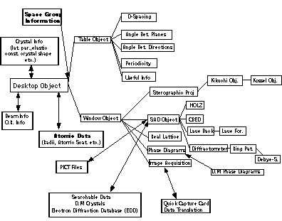
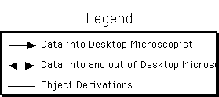
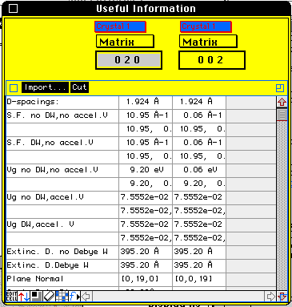

Desktop
Manual
Desktop
Manual
Introduction To Desktop Objects
There are two primary types of objects in Desktop Microscopist. The first
type of object is actually a collection of objects which support a particular
plotting feature such as a stereographic projection. All objects of this
type in Desktop Microscopist are derived from the Desktop Microscopist or
Diffract Object. The second type of object is a data type object. A typical
data type object supports data retrieval, data input and potentially data
presentation. One example of this type of object would be the crystal object
which supports crystal definition, another example would be the Crystal
Button which supports crystal presentation in a pop-up menu.
The first part of this chapter describes the Desktop Microscopist and derived
objects. The second part describes the more important data presentation
and data definition objects. The final portion of this chapter deals with
some important general concepts needed to effectively use Desktop Microscopist.
These subjects include, cutting and
pasting, printing of information, storage and retrieval, the use of defaults
to transfer information, and controlling the work environment (setting background
color, crystal color, label type, etc.) and search/match capabilities.
Each object in turn may have a set of objects which are derived from it.
The advantage of the derivation of objects from a single source is in the
inheritance of capabilities from original to derived object. The ability
to define unit cells and orientation relationships is passed automatically
to all objects derived from the Desktop Microscopist Object. The following
is a graphical representation of the derivation or inheritance of capabilities
for each of these objects, as well as a symbolic representation of different
data groups which are accessible to various objects in Desktop Microscopist.
As an example, the space group data types and the atomic information data
types are available to the root object. However, the EDD database is only
accessible from the SAD object and its derived objects. 8-bit real time
(CCD Camera) information can only be accessed through the Image acquisition
object and requires a Quick Capture card (or equivalent). Arrows indicate
data exchange within the program..i.EDD:Database;


List of Desktop Microscopist and Derived Objects
Diffract/Desktop Microscopist Object:
This object is used as the default object and the preference file object.
It allows access to all defined derived objects and the following data objects:
Crystal, Orientation Relationship, Atomic Information, Space Group information,
Crystal Shape, Crystal Elastic Constants, Beam Definition, Stage Control
Object and Beam Orientation.
Table Objects:
The Table Object is never directly accessible. It is a template for the
d-space, angle between directions, angle between plane, periodicity and
useful info objects. It supports numerical lists.
Angle Between Planes:
Use this object to determine a set of planes which meet the following criteria.
d-space for both planes and angle between planes. A range of d-space and
angle values may be specified. It is also possible to calculate angles between
poles of the primary defined crystals. It is possible to search the matrix
crystal for one set of planes and to compare this set of planes with a set
of planes from the first precipitate crystal. Desktop Microscopist returns
the zone axis, the found planes, their respective d-spacings and the angle
between the planes. Angle
Between Planes Dialog Box.
Angle Between Directions:
This object calculates the angle between a given direction and a set of
directions. Directions which fall within a set angular range are listed.
The set of directions includes all directions designated between the maximum
Miller index. It is possible to compare direction angles between a matrix
and one of the precipitate crystals. Angle
Between Directions Dialog Box
d-space Object:
This object will calculate a list of d-spaces for any of the four primary
defined crystals. Results may be sorted by d-spacing, structure factor or
extinction distance. D-spacings are listed for planes with d-spacings greater
than the specified minimum value. Results may be displayed in Å,Å-1,
degrees and mm. These units correspond to d-spacings, reciprocal d-spacings,
Two theta angle and g-vector. D-space
Dialog Box Setup.
Periodicity:
For purposes of this program, the periodicity of a zone axis is the distance
between the first and zero order Laue zones. Desktop Microscopist calculates
the periodicity for a set of zone axes, lists the zone axes, the periodicity
and the radius of the first order Laue zone. The radius of the first order
Laue zone is a function of the radius of the Ewald sphere (1/wavelength)
and the periodicity. Periodicity
Setup Dialog Box.
Useful Info:
Useful Info is a calculator for specific planes. It returns the following
information for two given planes: d-spacing, complex structure factor in
four different format and with or without Debye-Waller factor, extinction
distances, Angle between planes, plane normal direction, and the zone axis.
Planes may be from any of the four primary crystals, independent of the
other plane crystal. If two different crystals are used, the calculated
zone axis is for the matrix crystal. This information may be exported to
an ASCII tab delimited file.

Experimental 2-D Lattice:
This object is completely generated from experimental data generated from
the SAD and derived objects. Use the Generate
Lattice Function and follow the directions to get a table of Experimental
lattice points. It is also fully defined in the How to Determine
a 2-D lattice from experimental information. section.
Experimental 3-D Lattice:
Is generated from two or more 2-D lattice objects. Using the 2D-3D
Lattice Generation Dialog Box.
When generating this lattice, Desktop uses a Simplex methodology to optimize
the primitive lattice. After determination of the primitive lattice, an
attempt is made to reduce the lattice to a standard reduced cell.
Author:James T. Stanley J.
Stanley
Desktop
Manual
Distributed By: Virtual
Labs
Last Updated:June 26,1996